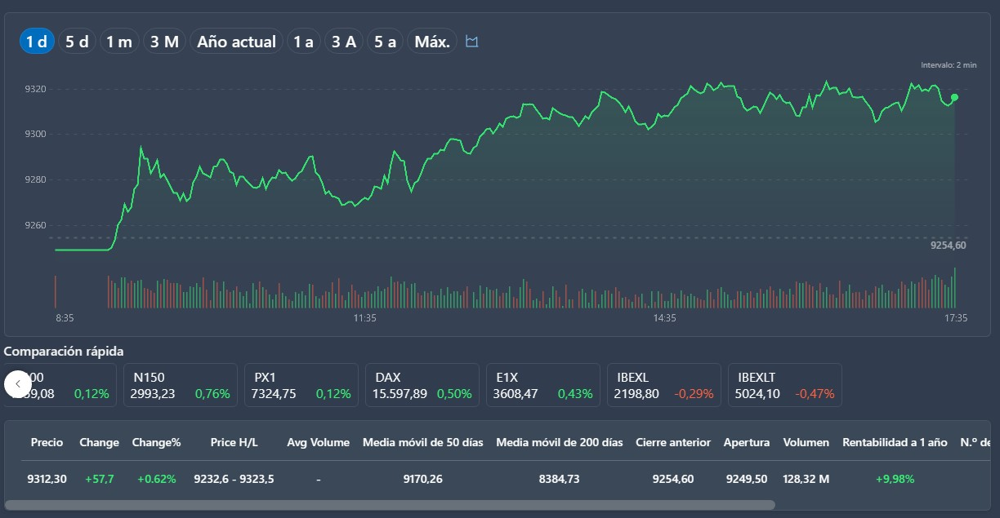
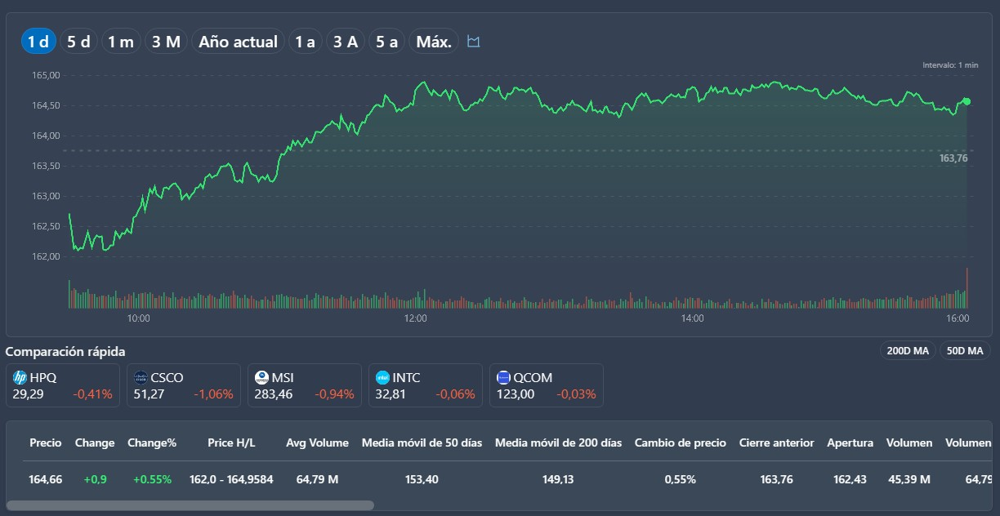
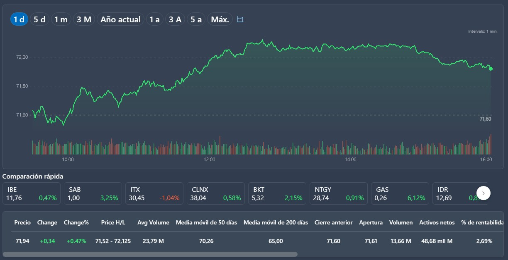
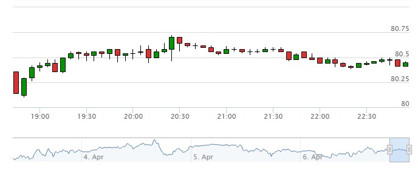

Acciones
Las acciones representan una participación en la propiedad de una empresa. Al comprar acciones de una empresa, los inversores obtienen el derecho a una parte proporcional de los beneficios y los votos en la junta directiva de la empresa.
En este caso el IBEX 35 vende sus Acciones dejando esas partes de las empresas al juego de oferta y demanda y a la especulacion
Bonos
Los bonos son instrumentos financieros de deuda emitidos por empresas o gobiernos. Al comprar bonos, los inversores prestan dinero al emisor y reciben un interés a cambio. Los bonos suelen considerarse una inversión más segura que las acciones, ya que los intereses y el capital prestado suelen estar garantizados , como podrian se los Bonos de Appel
En este caso Apple emite bonos para obtener fondos para financiar proyectos o pagar deudas existentes.
Fondos cotizados en bolsa (ETFs)
Los ETFs son fondos de inversión que se negocian como acciones en la bolsa. Estos fondos invierten en una canasta diversificada de activos, como acciones, bonos, materias primas o divisas.
En este caso los ETFs (Exchange Traded Funds) funcionan como fondos de inversión que se negocian en bolsa como Acciones

Futuros
Los contratos de futuros permiten a los inversores comprar o vender un activo a un precio acordado en una fecha futura determinada. Los futuros se utilizan a menudo como cobertura contra la fluctuación de precios de las materias primas, como el petróleo o el oro.
En este caso petróleo son contratos que establecen un precio y una fecha futura de entrega de una cantidad específica de petróleo crudo.

Opciones
Las opciones son contratos que otorgan a los inversores el derecho, pero no la obligación, de comprar o vender un activo a un precio determinado en una fecha futura. Las opciones pueden utilizarse para especular sobre el movimiento de los precios de los activos o como cobertura contra los riesgos de los precios.
En este caso las acciones deuch Bank estan al Alza